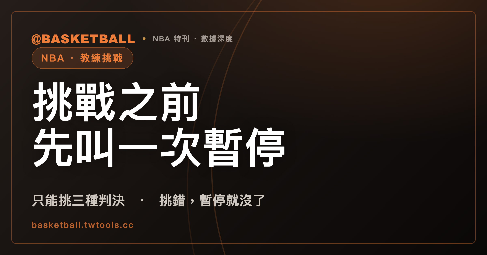

教練喊挑戰之前，得先叫一次暫停：NBA 教練挑戰只能挑三種判決
教練挑戰（Coach's Challenge）是 NBA 教練用食指在空中畫圈、請裁判重看一次判決的做法，但 NBA 2025-26 規則書只允許挑三種判決，發動前還得先叫一次暫停。挑錯，那次暫停就用掉了；只有第一次挑戰成功，球隊才保留暫停，並多得一次挑戰。

新手村｜規則入門・教練挑戰
假設 NBA 比賽的第四節，場上裁判剛吹了己方球員一次犯規。主教練站起來，先叫了一次暫停，接著用食指在空中畫圈，告訴裁判他要挑戰的是那一次犯規。場邊的球員在等，畫面轉到重播。
這一連串動作叫教練挑戰（Coach's Challenge）。它不是「不同意就能送重播」的通行證。NBA 2025-26 規則書的教練挑戰章節只讓教練挑三種判決，發動之前要先叫一次暫停；挑錯，那次暫停就用掉了。只有第一次挑戰成功，球隊才保留那次暫停，並多得一次挑戰機會。
這篇文章依序講：一場能挑幾次、哪三種判決可以挑、發動要走哪幾步、挑對與挑錯各付出什麼，以及它和裁判自己啟動的重播怎麼分工。文末有四個假設情境，讓你自己判一次。
每隊每場只有一次挑戰，第一次成功才會多給第二次
NBA 2025-26 規則書寫得很直接：每隊每場比賽有一次挑戰；如果第一次挑戰成功，球隊會再得到第二次。
所以次數不是固定的兩次，而是一次，加上一個有條件的第二次。條件叫「成功」，這個詞比看起來窄，後面會拆開講。
每一次使用，記錄台都會記下來。NBA 2025-26 規則書要求計分員記錄球隊有沒有使用教練挑戰、什麼時候使用，以及挑戰對這支球隊剩餘暫停數的影響。
只能挑三種判決：沒吹的犯規、對手被吹的犯規都不在裡面
NBA 2025-26 規則書用了 only 這個字：教練只能挑下面三種事件。
- 吹在己方球隊身上的個人犯規。
- 出界判決，而且己方沒有拿到球權。
- goaltending 或 basket interference 的違例判決。
三種都有一個共同前提：它們是裁判已經吹出來的判決，規則書用的是 called 這個字。同一份規則書也寫明，清單以外的任何判決，以及任何沒吹的（規則書用語是 non-call），都不是可以挑戰的事件。
規則書另外點名了幾個不能挑的例子，還特別寫明 among others，也就是不只這些：吹在對手身上的個人犯規、Technical Foul 與 Flagrant Foul，以及走步（traveling）、carrying、二次運球（double dribble）、flopping、進攻或防守三秒。這些詞在違例與犯規之間怎麼分，本站另有違例與犯規的差別，這裡不重講。
還有一個容易讀錯的詞：continuation。規則書的意思是，挑戰一次被吹的犯規時，和 continuation 相關的面向可以一併覆查；但 continuation 本身不是能單獨挑戰的事件。
所以看到爭議判決時，第一個問題不是「吹得對不對」，而是「它在不在這三種裡面」。
先叫暫停，再比手勢、說出事件：這一串動作有時間限制
NBA 2025-26 規則書把發動挑戰寫成編號的幾個條件。用白話排起來，是這樣一條過程：
- 判決之後立即叫一次合法暫停。 如果強制暫停（mandatory timeout）或對手叫的暫停已經在進行，則不在此限。
- 比手勢。 手勢是食指畫圈。
- 告訴裁判所挑戰的具體事件。 規則書要求主教練通知場上裁判，球隊挑戰的是哪一件事。
「立即」在這裡有明確的定義：只在這條規則裡，它指的是暫停要在球交給發球者、球交給罰球者，或跳球拋球之前叫出來。
有一種情況的時間算法不同。如果被挑戰的事件緊接在強制暫停或對手叫的暫停之前，教練要在那個暫停開始後 30 秒內發動，以暫停計時器計時。
這一串動作為什麼重要？因為規則書連一個失誤都寫好了後果：在判決之後、叫暫停並同時比手勢之前，如果球隊被判延誤比賽（delay of game），就失去挑戰那次判決的機會。叫暫停與比手勢得一起完成，中間耽擱到被判延誤比賽，挑戰的機會就沒了，不論那次判決本身對不對。
挑錯，那次暫停就用掉了；第一次挑對，才保留暫停並多得一次挑戰
暫停的去向看結果。下表是 NBA 2025-26 規則書對各種結果的處理：
| 結果（NBA 2025-26 規則書） | 那次暫停與挑戰的處理 |
|---|---|
| 原判維持，挑戰不成功 | 球隊失去那次暫停 |
| 第一次挑戰成功，原判被推翻 | 保留那次暫停，並獲得第二次挑戰；如果該暫停同時觸發了強制暫停，則不保留 |
| 第二次挑戰成功 | 不保留那次暫停 |
| 已經沒有暫停可用，卻嘗試挑戰 | 挑戰不成立，球隊被記一次 excessive timeout，罰則是 technical foul（技術犯規） |
| 對不可覆查的事件嘗試挑戰 | 被記一次暫停，但保留挑戰次數 |
差別在第二列與第三列。第一次挑戰成功，暫停還在，還多一次挑戰；第二次挑戰即使成功，那次暫停也不會還。第一次成功還有一個例外：發動挑戰的那次暫停，如果同時觸發了強制暫停，暫停也不保留。
表中下面兩列說明「先叫暫停」不是形式。球隊沒有暫停可用，這一步就走不下去，硬挑會吃到技術犯規。
把這張表讀成一句話：挑戰失敗，暫停就沒了；第二次挑戰，成敗都不還暫停。
判決被改了，挑戰也可能失敗：犯規還記在原球員身上就是失敗
看到重播之後判決有變動，容易以為挑戰就成功了。NBA 2025-26 規則書對「成功」的定義窄得多。
挑戰的是犯規時，只要犯規還算在原本被吹的球員身上，這次挑戰就算失敗，即使其他可覆查的事項朝挑戰方有利的方向改變也一樣。規則書舉了一個例子：投籃犯規改成非投籃犯規，對手因此不用罰球，但犯規還是記在原球員身上，這仍然是失敗。
挑戰的是出界判決時，成功只有一種：原判被推翻成對挑戰方有利。規則書列了三種結果：
- 球權判給挑戰方。
- 兩隊同時末次觸球（simultaneously last touched）的跳球，而且要有明確且決定性的影像證據。
- 與出界違例相鄰的對手犯規，並且球權判給挑戰方。
推翻原判要有多大把握？規則書的標準是 clear and conclusive visual evidence，也就是要有明確且決定性的影像證據，證明原本對那個面向的判定是錯的。挑戰犯規時，由場上的 crew chief 做出裁定，Replay Center 的人員居於輔助角色。挑戰成功之後，比賽從中斷點（point of interruption）恢復。
重播不只教練能叫：出界全場只能靠挑戰，倒數兩分鐘的 goaltending 則改由裁判啟動
NBA 2025-26 規則書裡，教練挑戰在 Rule 14；另一章 Rule 13 列的是即時重播（instant replay）會被啟動的情境。兩章要合起來讀。
先看出界判決。規則書寫的是：教練挑戰是觸發出界判決重播的機制（the only mechanism），適用全場任何時間。也就是說，出界的重播全場都得靠教練挑戰啟動。
goaltending 與 basket interference 的路線會在比賽尾聲換掉。第四節倒數兩分鐘，以及任一延長賽的倒數兩分鐘，教練不得再以挑戰觸發這兩種判決的重播；規則書寫明，這段時間裡這類判決的重播由場上裁判單獨觸發。Rule 13 有對應的一條：這段時間裡，裁判不確定 goaltending 或 basket interference 是否判對，就會重播。
Rule 13 還列了別的情境，例如：
- 任一節結束時，時鐘歸零（0:00）的進球。
- 裁判不確定一次被吹的個人犯規，是否達到 flagrant foul 的標準。
- 發生 Altercation。
有一點值得停下來看：Flagrant Foul 在教練挑戰那邊，是不能挑的事件；在 Rule 13 這邊，裁判不確定它是否成立時，卻會重播。兩章的重播由不同的條件啟動，所以教練不能挑，不代表判決不會被重看。
FIBA 2024 也有教練挑戰，但每隊每場一次不論成敗，只用在有重播系統的比賽
前面全部是 NBA 2025-26 規則書。FIBA 2024 規則（Official Basketball Rules 2024，Appendix F.4）有自己的一套，叫 head coach's challenge（HCC），而且只用在使用 Instant Replay System（IRS）的比賽：
| 項目 | NBA 2025-26 規則書 | FIBA 2024 規則 |
|---|---|---|
| 次數 | 每隊每場一次，第一次成功再給第二次 | 每隊（每位總教練）每場一次，不論成功與否 |
| 可挑範圍 | 三種判決（見前文） | 只能挑 Appendix F.3 所列的比賽情境 |
| 時間限制 | 事件緊接在暫停之前時有 30 秒窗口 | F.3.2 與 F.3.3 的時間限制不適用，全場任何時間皆可請求 |
| 手勢 | 食指畫圈 | 雙手比畫長方形，並大聲用英語說 challenge |
兩套規則名字相近，內容各自獨立。看 FIBA 比賽時，NBA 那套的次數、可挑範圍與暫停處理不能直接搬過去。
四個假設情境：能不能挑？暫停還在不在？
先蓋住右欄，自己判一次。下面的情境都是假設，答案依 NBA 2025-26 規則書，可以從前面的規則直接推出來：
| 假設情境 | 能不能挑 | 暫停還在不在 |
|---|---|---|
| A：己方球員被吹一次個人犯規，這是本場第一次挑戰。重播後原判被推翻。 | 能挑：吹在己方身上的個人犯規屬於三種之一 | 在，除非該暫停同時觸發強制暫停；另外多得第二次挑戰。若重播後原判維持，或犯規仍記在原球員身上，就是失敗，暫停沒了 |
| B：對手被吹一次個人犯規，教練覺得不該吹。 | 不能挑：吹在對手身上的個人犯規列在不可挑戰的事件裡 | 不適用，沒有成立的挑戰可以結算暫停 |
| C：第四節剩 1 分 30 秒，防守球員被吹 goaltending，教練覺得不該吹。 | 不能用挑戰觸發：第四節倒數兩分鐘，這類判決的重播改由場上裁判觸發 | 不適用，沒有成立的挑戰可以結算暫停 |
| D：一次球明明出界，裁判沒有吹，比賽繼續。 | 不能挑：沒吹的（non-call）不是可挑戰的事件 | 不適用，沒有成立的挑戰可以結算暫停 |
| E：同一場已經成功挑過一次，教練再挑己方另一次被吹的犯規，重播後原判被推翻。 | 能挑：這是第二次挑戰 | 不在：第二次挑戰即使成功，也不保留那次暫停 |
情境 C 換個時間點，答案就不同：假設是第四節還有 5 分鐘，同樣的 goaltending 判決就在教練挑戰的清單裡，前提是教練走完先叫暫停的步驟。
以上依據 NBA 2025-26 規則書。TPBL、PLG、HBL 的比賽各有各的規則書，這裡沒有逐條比對，看那些比賽時請以各聯盟公布的規則為準。
下次看到教練食指畫圈，可以問三件事：被挑戰的判決在不在那三種裡面；比賽是不是已經進入第四節或延長賽的倒數兩分鐘；挑戰是第一次還是第二次。三個答案，決定他能不能挑，也決定暫停還在不在。
常見問題
NBA 教練挑戰可以挑哪些判決？
依 NBA 2025-26 規則書，只能挑三種：吹在己方球隊身上的個人犯規、己方沒有拿到球權的出界判決，以及 goaltending 或 basket interference 的違例判決。清單以外的判決和任何沒吹的（non-call）都不能挑；吹在對手身上的個人犯規、Technical Foul、Flagrant Foul，以及走步、二次運球等違例，是規則書點名不能挑的例子。第四節與任一延長賽的倒數兩分鐘，教練不得再以挑戰觸發 goaltending 或 basket interference 的重播。
教練挑戰失敗會怎樣？
依 NBA 2025-26 規則書，原判維持就是挑戰不成功，球隊失去發動挑戰用的那次暫停。第一次挑戰成功時，球隊保留那次暫停，並多得第二次挑戰；但如果該暫停同時觸發了強制暫停，暫停不保留。
第二次挑戰成功，暫停會還給球隊嗎？
不會。依 NBA 2025-26 規則書，只有第一次挑戰成功才保留暫停；第二次挑戰即使成功，發動挑戰用的那次暫停也不保留。第二次挑戰本身，則要先有第一次成功才會拿到。
FIBA 的教練挑戰和 NBA 一樣嗎？
不一樣。依 FIBA 2024 規則（Appendix F.4），head coach's challenge 只用在使用 Instant Replay System 的比賽，每隊（每位總教練）每場一次，不論成敗，而且只能挑 Appendix F.3 所列的比賽情境。NBA 2025-26 規則書是每隊每場一次，第一次成功再給第二次，兩者不能互相套用。
資料來源
- NBA Official Playing Rules 2025-26 賽季規則書：Rule No. 14（Coach's Challenge）、Rule No. 13（Instant Replay）、Rule No. 2（計分員職責）。網頁版：official.nba.com／rule-no-14-coachs-challenge…、official.nba.com／rule-no-13-instant-replay…
- FIBA Official Basketball Rules 2024（2024 年 10 月版）：Appendix F.4（Head Coach's Challenge）。